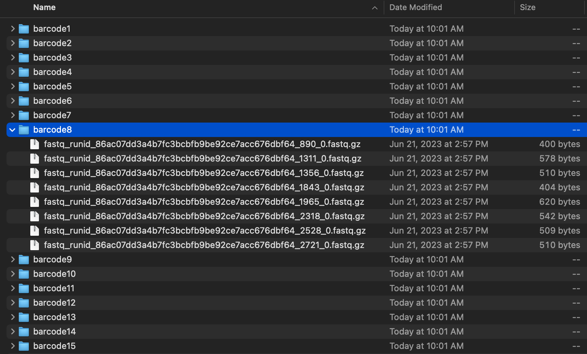

Ally’s ONT Data Pipeline!
Feel free to reach out with any questions! My email is: aim168@uw.edu
Step 1: Concatenate

When we get raw data off of the MinION, there will be many fastq files for each barcode. We will want to concatenate (combine) them, so the data is easier to process.
###### make a directory for the concatenated files ######
mkdir concatenated
###### for loop to concatenate all files within each barcode ######
for i in *barcode*
do
cd $i
cat *>${i}.fastq.gz
echo did ${i}
mv ${i}.fastq.gz ../concatenated
cd ..
doneSo now, you have a file inside of all of your barcode directories called barcode#.fastq.gz.
Step 2: Quality Control with Nanoplot
Documentation for Nanoplot:
https://github.com/wdecoster/NanoPlot
Nanoplot will give us information about the quality of our sequencing run and sequences! You will run NanoPlot on the sequencing_summary.txt file that is generated when you basecall.
Note:
# make a directory to store all of the output plots
mkdir nanoplot_summary_plots
# make sure that you are in the same directory as the sequencing_summary.txt
NanoPlot --summary sequencing_summary.txt --loglength -o nanoplot_summary_plotsStep 3: Trim Primers with Chopper
this is optional!
Documentation for Chopper:
https://github.com/wdecoster/chopper
Given that you want to trim off primers, we can use Chopper to take off n amount of basepairs off of the beginning and end of the end of our sequences. The code below is made for MiFish primers, so it will trim 21 off of the head (length of forward primer) and 27 off of the tail (length of reverse primer). It will also filter out any sequences less than 50 bp or more than 300 bp in length.
mkdir trimmed
for i in *barcode*
do
gunzip -c ${i} | chopper --headcrop 21 --tailcrop 27 --maxlength 300 --minlength 50 | gzip ../trimmed/${i}
doneStep 4: Annotate Sequences with Kraken2
Documentation for Kraken2:
Official website: https://ccb.jhu.edu/software/kraken2/
Github wiki manual: https://github.com/DerrickWood/kraken2/wiki/Manual#
Now, we will annotate our reads using Kraken2. Keep in mind, before you do this step, you need to have a Kraken2 database downloaded.
# make sure you are in the directory with all of the fastq's you want to annotate
for i in *barcode*
do
kraken2 --db {path to database} --output $(echo ${i} | cut -d . -f 1).report.out --report $(echo ${i} | cut -d . -f 1).report ${i}
done
#for example, if your database is ~/Desktop/Meyer_kraken2_db, you'd input
# kraken2 --db ~/Desktop/Meyer_kraken2_db --output $(echo ${i} | cut -d . -f 1).report.out --report $(echo ${i} | cut -d . -f 1).report ${i}There are 2 files that are outputted from kraken2:
barcode#.report.out
barcode#.report
A helpful guide for understanding the kraken2 output files: https://bisonnet.bucknell.edu/files/2021/05/Kraken2-Help-Sheet.pdf
Step 5: Read Kraken2 Report into R
Open the ONT_Kraken2_report_analysis.rmd in RStudio and run the code chunks to read the Kraken2 report files into at dataframe that can be used for data analysis/visualization.